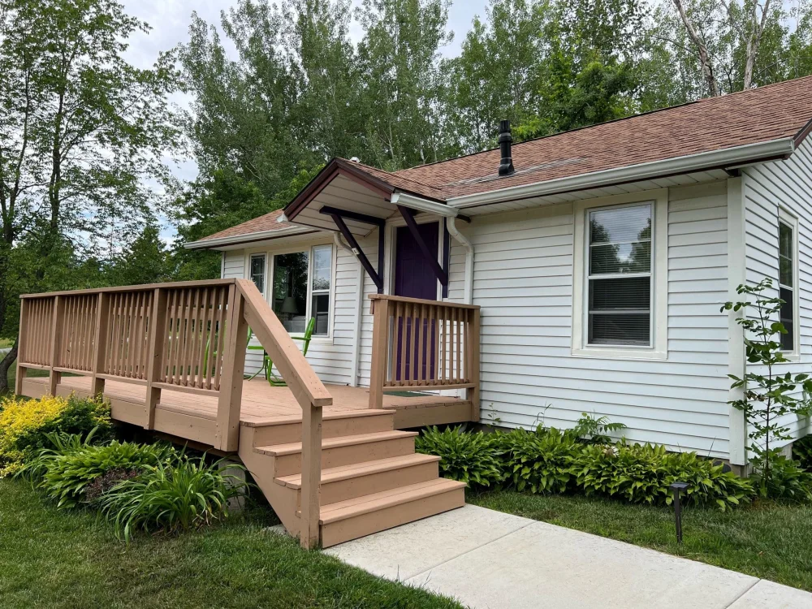
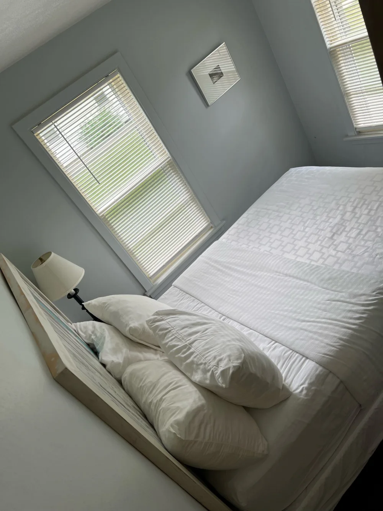
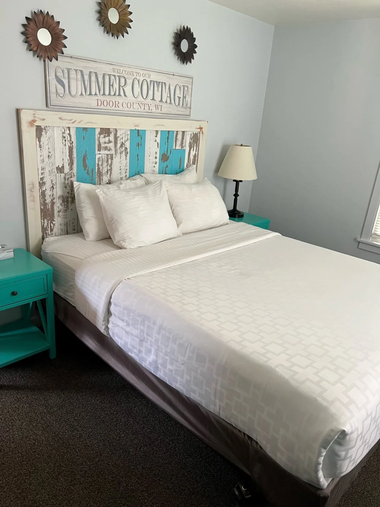
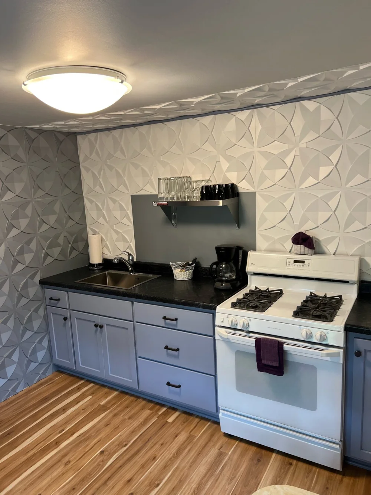
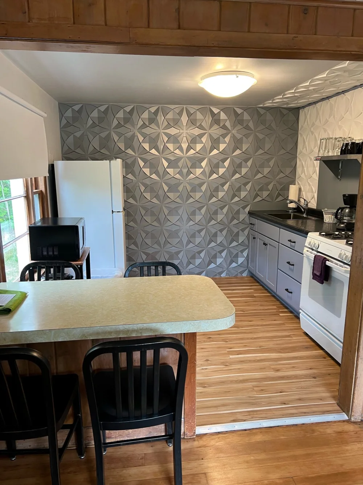
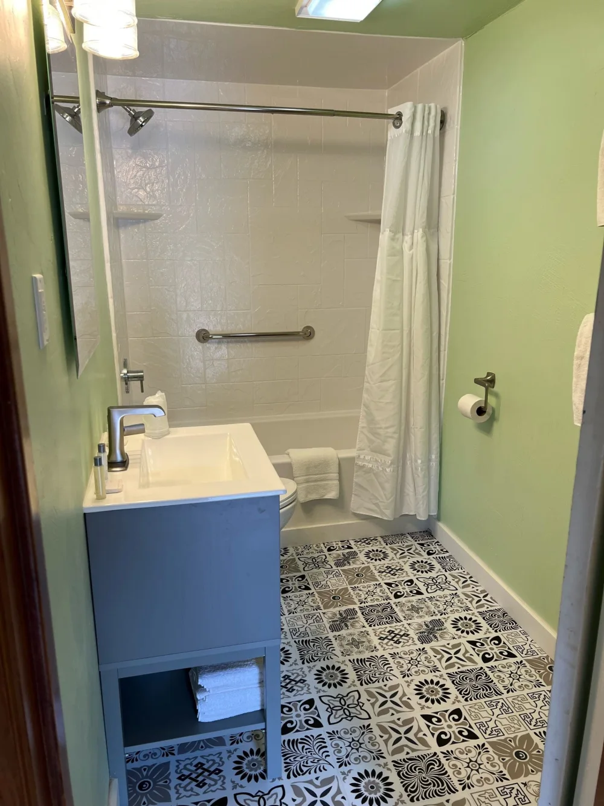

One Saturday night in Door County.도어 카운티에서 토요일 하룻밤.
Two verified options for two adults and two dogs.성인 2명과 반려견 2마리의 예약 가능 여부를 확인한 숙소 두 곳.
COUNTRYSIDE COTTAGES · FISH CREEK
Inside Cottage 6Cottage 6 내부 보기
The two-bedroom Full/Queen cottage returned by the booking search for October 31–November 1. A separate cottage with a kitchen, one bathroom, and a sleeper sofa.10월 31일–11월 1일 예약 검색에 나온 Full/Queen 침실 2개 코티지입니다. 주방, 욕실 1개, 소파베드를 갖춘 독립 코티지입니다.
Fish Creek, WI 54212
Outside central Fish Creek, at Countryside Cottages. The map marks the property; ask reception for Cottage 6.Fish Creek 중심가 외곽의 Countryside Cottages입니다. 지도는 숙소 부지를 표시하며, 도착 시 Cottage 6 위치를 안내받으세요.
Open exact property location ↗숙소 위치 지도 보기 ↗





Tap a photo to enlarge. All six photographs appear in the property’s official Cottage 6 gallery (image files dated July 2022). No living-room photograph is supplied there.사진을 누르면 크게 볼 수 있습니다. 사진 6장은 숙소 공식 Cottage 6 갤러리에서 가져왔습니다(이미지 파일 경로: 2022년 7월). 해당 갤러리에는 거실 사진이 없습니다.
Bed-size discrepancy: the booking listing and property overview say one queen + one full; the Cottage 6 page also shows a conflicting “2 Queen Size Beds” label. Confirm bed sizes with the property.침대 크기 정보 불일치: 예약 목록과 숙소 개요에는 퀸 1개 + 더블 1개로 나오지만 Cottage 6 페이지에는 “퀸 침대 2개”라는 상충하는 표시도 있습니다. 숙소에 침대 크기를 확인하세요.
JACKSONPORT · 6269 HWY 57
Innlet Motel
Verified through your BringFido link공유해 주신 BringFido 링크에서 확인
King Room with Spa Bath · October 31–November 1 · One night · Two adults and two pets shown at checkout. Checked October 26, 2026; not reserved.스파 욕조가 있는 킹룸 · 10월 31일–11월 1일 · 1박 · 결제 전 화면에 성인 2명과 반려동물 2마리 표시. 2026년 10월 26일 확인, 예약 전.
- Price요금
- $245.74 payable at booking ($196 room + $21.32 service charge + $28.42 tax). Two dogs cost another $30 at check-in. Combined: $275.74 before any tax on the pet fee.$245.74 예약 시 결제(객실 $196 + 서비스 요금 $21.32 + 세금 $28.42). 반려견 2마리 요금 $30은 체크인 시 별도 결제. 합계 $275.74이며 반려동물 요금에 대한 추가 세금은 포함하지 않았습니다.
- Dogs반려견
- Any size; $15 per pet per night. The selected checkout shows two pets. BringFido states that its concierge assigns guests a pet-friendly room.크기 제한 없음, 1마리당 1박 $15. 선택한 결제 전 화면에 반려동물 2마리가 표시됩니다. BringFido는 반려동물 동반 객실 배정을 안내합니다.
- Terms조건
- 100% nonrefundable; full payment today. Check-in 3–8 pm; checkout before 11 am. Room occupancy: two people.100% 환불 불가, 예약 당일 전액 결제. 체크인 오후 3–8시, 체크아웃 오전 11시 전. 객실 정원 2명.